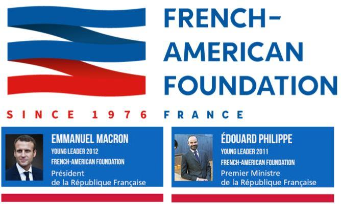

Ces lignes ont été écrites fin mars 2019, alors que la situation au Venezuela semblait figée pour quelque temps. Peut-être au moment de leur publication en sera-t-il différemment, sans que l’analyse suivante perde de sa pertinence.
Pour des Français de ma génération, le Venezuela évoque finalement peu de choses. Un roman de Jules Vernes, les plus grandes chutes d’eau du monde, le film "Le Sauvage" avec Yves Montand et Catherine Deneuve, quelques manœuvres pathétiques il y a 25 ans de l’Armée de l’air française pour le compte de la firme Dassault qui espérait y vendre des Mirages, pour faire croire à une communauté de destin avec ce pays lointain qui finalement acheta des F16 puis des Sukhoi…. Et qui se souvient encore des vols Paris/Caracas en Concorde, opérés par Air France de 1976 à 1983 ?
Alors quand je vis apparaitre sur les télévisions un jeune opposant qui se déclarait président de par la volonté subite du peuple et non des élections, je regardais ça d’un œil distrait…. jusqu’à ce que dans la même journée on apprenne que les Etats-Unis d’Amérique soutenaient aussitôt ce prétendant, que le régime actuel était forcément mauvais et méprisable (quand nos médias disent « régime » c’est que ça doit déplaire : le régime de Béchar Al Assad, le régime des mollahs, le Kremlin et Pyongyang, les "troupes du régime ", ça sonne bien dans un reportage – par contre, on ne dit jamais le régime de Macron, sauf certains qui essayent pour agacer)
Intrigué, je me suis penché sur l’image de ce jeune personnage qui apparaissait de partout….
Je notais son sourire éclatant de blancheur (ce qu’on appelle un sourire Gibbs, indispensable aux États-Unis..) son front lisse et les photos retouchées, cet homme inconnu des Vénézuéliens eux-mêmes deux mois avant son auto-proclamation….et je me suis dit, qu’est-ce qu’on essaie de nous vendre encore ? tiens, je suis sûr que …. j’ai donc regardé sa biographie, et là bingo, ce monsieur était bien passé par la George Washington University (DC) …
Alors j’ai regardé un peu plus les sujets de la télévision française qui traitaient de cette histoire, et là aussi, des foules de séquences sont revenues à ma mémoire : le matraquage sur la Yougoslavie, l’Irak, la Roumanie, ces malheureux pays où il fallait absolument intervenir pour les libérer de leur dictateur, avec le résultat que l’on sait : la Yougoslavie a été démembrée, la Roumanie (enfin, son gouvernement) est un des plus fidèles soutiens de l’OTAN, la Lybie et l’Irak sont en ruines …. J’ai donc regardé se dérouler la séquence une fois de plus, tout était en place, les caméras au poste frontière, l’inévitable Agnès Varahmian de France 2 qui avait sauté dans un avion (le dénouement tardant à venir, elle est rentrée aux Etats-Unis depuis, les frais de mission sont ce qu’ils sont, même quand on est au service d’une cause) Ce monsieur Guaido avait une mission, il devait la remplir, mais pour l’instant ça traine un peu – ça commençait pourtant bien !Quittons le Venezuela, à la recherche des petits frères de ce gentil jeune premier - et cela ne va pas prendre beaucoup de temps pour trouver le reste de la famille.
Ainsi la Croatie, ce pays vidé de sa substance par son adhésion à l’Union Européenne : la côte est toujours aussi ensoleillée, les hôtels y fleurissent, il y a des bars en terrasse et des magasins de luxe à Zagreb, aussi peu importe que l’intérieur des campagnes se dépeuple à toute allure, comment en effet convaincre la jeunesse de rester alors que l’Europe est à portée d’autocars ou de low-cost, sans qu’il y ait besoin de visa désormais ?
Le Premier Ministre de ce pays présente bien aussi : blonde et souriante, Kolinda Grabar n’a pas dans sa jeunesse perdue trop de temps dans son pays, qu’elle a quitté à 17 ans pour une bourse d’étude aux Etats-Unis, pour en revenir 8 ans après en passant à travers les gouttes de la guerre civile semble-t-il, et profiter de l’auréole de celle qui a vu le vrai monde. Carrière fulgurante de celle qui a les bons appuis : nouveau passage par la Georges Washington University (comme le précédent) ministre des Affaires Étrangères de son pays, représentante à l’ONU, Secrétaire générale adjoint de l’OTAN, membre de la Trilatérale – toutes les cases sont cochées, et les Croates seront bien défendus. Un moment distrait par un accouchement qu’elle voulait faire se produire au Canada (comme n’importe laquelle de ces immigrées qui prennent l’avion) elle a eu depuis une carrière politique exceptionnelle, pour le plus grand bénéfice de ceux qui ont investi sur elle.
Allons maintenant sur les bords de la Baltique, et là c’est carrément le tiercé gagnant avec les trois pays Baltes : commençons par le Nord, avec l’Estonie, et son charismatique (enfin, ils le sont tous) Président Toomas Hendrik Ilves : né en Suède, ayant vécu aux Etats-Unis jusqu’à l’âge de 40 ans, où il fut notamment professeur d’estonien (facile). Ambassadeur, ministre des Affaire Etrangères, dix ans Président jusqu’en 2016, l’OTAN n’aura pas de souci avec son pays.
Immédiatement au Sud, en Lettonie c’est à 36 ans qu’Arturs Kariņš revient des Etats-Unis où il est né, pour devenir en 2019 président de ce petit pays. Sa maitrise de l’anglais l’aidant définitivement lors des conférences internationales, les forces de l’OTAN peuvent désormais considérer une installation en dur dans ce petit pays. Et tant pis pour les 40% de russophones qui pourraient avoir une idée différente, ils n’ont qu’à rentrer chez eux n’est-ce-pas ?
Le troisième et dernier état Balte est la Lithuanie, avec Mme Grybauskaitė comme présidente. Dès l’indépendance de son pays, elle se rend aux Etats-Unis (Georgetown University, Washington DC…) pour y acquérir les codes et éléments de langage, puis revient pour servir dans différents ministères. Avec elle tout est simple : pas besoin de chercher si elle a approuvé l’intervention de l’OTAN en Lybie, si elle a boycotté les JO de Sotchi, ce qu’elle pense de la prison secrète de la CIA d’Antaviliai près de Vilnius, on connait les réponses avant d’avoir posé les questions. Autre président de Lithuanie (98/2003 puis 2004/2009) M. Valdas Adamkus vécut aux US où il eut une carrière distinguée de haut fonctionnaire civil… jusqu’à l’âge de 72 ans, quand il retourna en Lithuanie pour y gagner les élections (le syndrome de l’oncle d’Amérique ?) Il y avait émigré en 1949, à l’âge de 23 ans, sans qu’on ait approfondi tellement ce à quoi il avait pu s’occuper pendant la deuxième guerre mondiale et le va-et-vient des armées allemandes et soviétiques sur ces territoires. Il occupa dans les années 50 divers postes dans le renseignement militaire US – les langues étrangères, ça sert toujours. Et nous ne nous sommes intéressés qu’aux échelons supérieurs de ces pays – vous imaginez comment ça peut être à tous les étages…. Comme me le racontait un ami colonel français au recours d’un voyage officiel dans ces trois pays : « les Américains se sont payés une Légion Étrangère »…. C’est bien commode pour les multiples coalitions qu’ils agrègent au Moyen-Orient, pas tant pour les effectifs concernés (une ou deux compagnies) que pour la dilution des responsabilités que cela permet.
Saakachvili avec George W. Bush, le 10 mai 2005Passons maintenant à l’inénarrable Saakachvili, qui après des études somme toute normales en Union Soviétique, reçoit une bourse d’études de trois ans pour …. l’Université Georges Washington (encore !) A son retour à Tbilissi, il intègre un parti au pouvoir, s’en sépare, et commence à fournir un retour sur investissement en lançant un mouvement de désobéissance civile, qui se transformera rapidement en ce que l’on a appelé la Révolution des Roses (les œillets étaient déjà pris, au Portugal en 1975) Avec le financement de l’Open Society de Georges Soros que l’on ne présente plus, il arrive donc au faite du pouvoir à la suite d’une sorte de coup d’état, pour être élu président en 2004 puis 2008. C’est peu de dire que pendant ces années sa politique aura été pro-américaine, pro-OTAN et même pro-européenne (dur quand même d’essayer d’intégrer à l’Europe un pays à l’Est de la Turquie, qui elle-même pose déjà beaucoup de questions…) De nombreuses difficultés, dont une guerre perdue avec la Russie et des accusations de malversations comme d’autoritarisme, le font repartir à New-York chez ses créateurs, où il reste deux ans… avant que certains aient la bonne idée de le remettre au turbin, cette fois en Ukraine où il est parachuté gouverneur de l’Oblast d’Odessa en mai 2015. Hélas pour lui, le chaudron politique ukrainien aura raison de ses nouvelles ambitions, et après deux années chaotiques entre l’Ukraine et la Pologne, il s’exilera pour de bon (?) aux Pays-Bas, pays d’origine de son épouse. Que sera demain pour lui ? ses créateurs décideront-ils de l’utiliser encore une fois ? où le porteront ses prochaines fidélités, tel un moderne comte Pozzo di Borgo, l’ennemi juré de Napoléon, qui servit tour à tour l’Angleterre et la Russie ? et Pascal Paoli la créature des Anglais et des francs-maçons passa bien en exil plus de 20 ans à Londres, avant de revenir au pouvoir en Corse … et de repartir d’ailleurs dans l’autre sens peu de temps après, définitivement cette fois.
Disons-le ici : c’est l’image d’un Saakachvili qui nous est irrésistiblement apparue à la première photo de Juan Guaido, et a donné l’idée de cet article.
Un autre clin d’œil est le rappel de la trame des romans SAS d’il y a 30 ans : le dénommé Malko dont tout le monde se souvient (si, si..) arrive dans un improbable pays, mandaté par la CIA et aidé par l’ambassade US, pour y propulser la cause d’un remplaçant acceptable au tyran actuel, et dont les contacts sont fournis par le poste de l’agence sur place….
On pourrait continuer longtemps ce qui ne serait plus que de l’énumération : de l’Otpor serbe financée par l’Open Society pour essaimer avec plus ou moins de succès à travers toute l’Europe, à la cause Ouïghoure nouvelle coqueluche de l’Occident, qui permet cette fois de s’attaquer à la Chine, nombreux sont les personnages repérés à un moment ou à un autre par des ambassades liées aux agences de renseignement et à diverses officines et ONG US (Freedom house, National Endowment for Democracy, IRI) actives dans tous les pays précités…. et dorénavant Venezuela. Il est évident que la France n’a aucune raison d’être épargnée : nous avons la French American Foundation, et ses Young Leaders, des personnes repérées très tôt et parrainées, dans le but de lisser la pensée transatlantique et de faire avancer dans la société les grandes causes du moment de l’autre côté de l’Atlantique (égalité des sexes et des genres, promotion LGBT, maillage des implantations de migrants dans le paysage français – sauf en Corse, ne soyons pas fous, cher Monsieur Cazeneuve …) Un des plus grands succès de cette organisation est de compter dans ses rangs les deux premiers personnages de l’état français depuis 2017 !
Beaucoup de choses apparaissent alors plus claires si l’on utilise cette grille de lecture. Mais attention, vous savez tous que si vous présentez théorie et justifications à l’appui de celle-ci, vous serez simplement et immédiatement traité de complotiste (jadis, on disait anti-américanisme primaire, ça marche toujours de temps en temps)
Tout cela est bien contrariant. Nous terminerons en citant deux exemples, qui montrent que le résultat n’est pas acquis d’avance, s’agissant d’êtres humains. Certes, la perspective d’être sélectionné pour l’Amérique, d’y vivre quelque temps (grosses voitures, T-bones et students parties…) puis de revenir avec le prestige de celui qui y a été, se sachant désormais proche et partie de la grande puissance, donnera des envies à plus d’un…. mais pour y trouver quoi, en fin de compte : violence, pornographie, illettrisme, idées détestables que vous aurez mission de ramener ? une jeune collègue russe me racontait avoir quitté sa ville natale de Sibérie à 17 ans pour une bourse d’études aux US, et après quatre mois n’avoir plus qu’une envie, celle de tous les hacher au fusil-mitrailleur (!) de peur d’être contaminée par leur stupidité. Elle rentra donc chez elle au bout d’un an - l’investissement avait été perdu sur celle-là ! Une autre grande dame, patronne d’un grand média russe audiovisuel diffusant sur toute la planète, passa un an dans le New Hampshire au titre du Future Leaders Exchange (besoin de traduire ?) qui s’adresse aux ressortissants de l’ex-Union Soviétique. Là aussi, au vu des résultats et de la carrière ultérieure de cette grande dame, on ne peut pas dire que l’investissement ait été rentabilisé …. Et même si beaucoup trop encore acceptent de se renier et de finalement travailler contre leur pays - pour quelques billets verts en fin de compte - tout espoir n’est donc pas perdu ! Peut-être aurons-nous éclairés certains candidats au long de ce petit article…. Dans tous les cas, et au grand dam de certains, le gouvernement russe a quasiment interdit en 2015 toute activité en Russie à ces officines fabriques d’espions et au financement contestable, ce qui devrait donner un peu d’air pour les années à venir.

Partager cette page